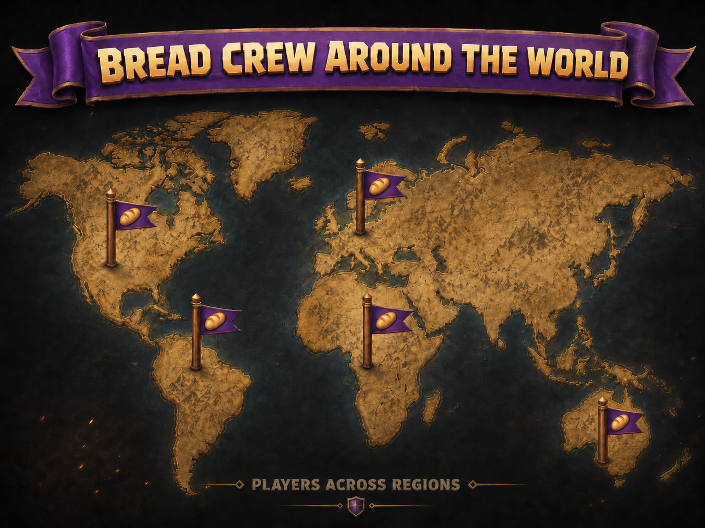

History
Bread Crew began as a German Clash of Clans clan, founded by Paloge around 2020. What started as one competitive clan slowly grew into an international clan family built around war consistency, high standards and long-term improvement.
Over the years, Bread Crew became known for serious war performance, strong recruitment and an active community culture. The clan’s identity has always been simple: high standards for wars, good vibes everywhere else.
By 2026, the Bread Crew family had expanded into multiple clans, each serving different levels of players while keeping the same competitive spirit:
- Bread Crew — Level 25 Champion League II — 258 war wins, 18 losses, 79 ties — 181 war win streak — TH 14+
- Broodcrew — Level 19 Master League II — 143 war wins, 0 losses, 67 ties — 143 undefeated war streak — TH 10+
- Brøđcrew — Level 21 Champion League III — 153 war wins, 7 losses, 28 ties — 122 war win streak — TH 11+
- Brotcrew — Level 27 Champion League I — 302 war wins, 103 losses, 53 ties — TH 1+
Today, Bread Crew is an international Clash of Clans family with several active clans, strong CWL presence, long war streaks and a community focused on helping players keep improving.
Ode to the bread. 🍞

Ready to join the clan?
Enter our Discord and connect with Bread Crew players from around the world. Share war plans, upgrades, and the best clan energy.
Join the clan on Discord